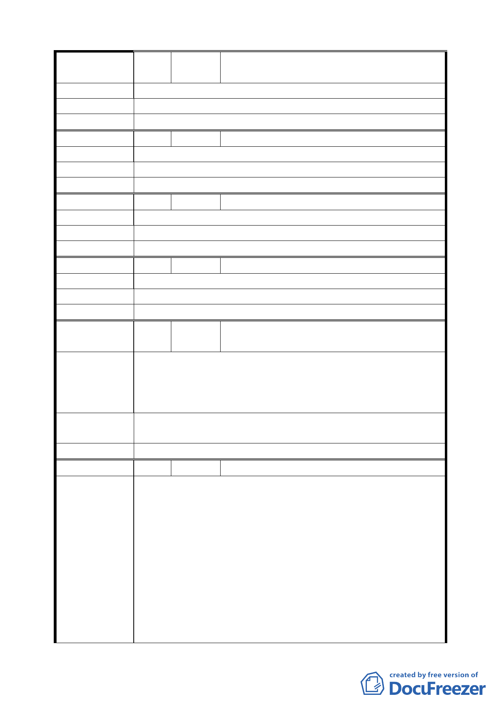

編
號 42
陳情人
莊藹玲、莊禮傳、陳華誠、陳彩鳳（延平
北路三段 1 巷 11 號）
陳 情 理 由 拒絕聯合開發。
建 議 辦 法 拒絕聯合開發。
委 員 會 決 議 同編號 1。
編 號 43 陳情人 王清香（延平北路三段 1 巷 13 號）
陳 情 理 由 拒絕聯合開發。
建 議 辦 法 拒絕聯合開發。
委 員 會 決 議 同編號 1。
編 號 44 陳情人 郭黃妹（延平北路三段 1 巷 15 號）
陳 情 理 由 拒絕聯合開發。
建 議 辦 法 拒絕聯合開發。
委 員 會 決 議 同編號 1。
編 號 45 陳情人 柯寬容（延平北路三段 1 巷 19 號）
陳 情 理 由 未經協議即逕自送細部計畫公展，嚴重違反都委會之決議。
建 議 辦 法 反對聯合開發。
委 員 會 決 議 同編號 1。
編
號 46
陳情人
卓世昌、鄭蓁蓁等 32 人（延平北路三段 3
號）
一、本大樓共 36 戶全數反對重建，不符合聯合開發提案。
陳
情
理
由
二、本大樓高十二層屋齡十九年無需都市更新。
三、本大樓位置與捷運原始出入口設計無關聯，並非公共工
程需要用地。
擬建議處理
意見
同編號 1。
委 員 會 決 議 同編號 1。
編 號 47 陳情人 陳士元（延平北路三段 7 號）
一、此項地方建設本應是政府、地方、地主、建商等投資單
位共榮互惠之開發建設，無奈政府相關單位舉辦之說明
會或給予地主們之合建資訊，不夠貼切、不夠明瞭，以
致引起相當重大程度反彈，這非地方之福，政府本是人
陳情理由
民公僕，既然有心建設地方，就應責付承辦單位，應完
全取得各所有權人（在明白其相關權益，例如：徵收金
額、開發後取得比例…）同意書或不同意書（載明不同
意理由），而非片面認定，未寄回反對理由書即為默認
（需知本社區有甚多老者地主，對於合建內容並不清
楚，不可矇混百姓）。
二、本人已收到權益分配之試算表，也明白其中內容之不公
一七